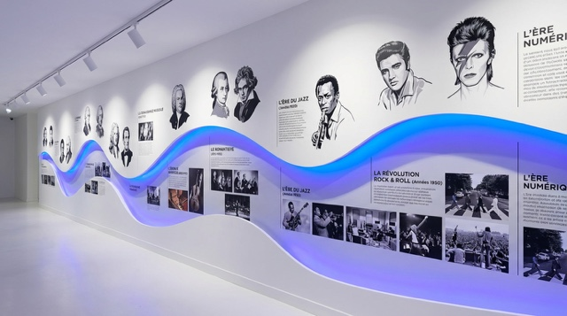
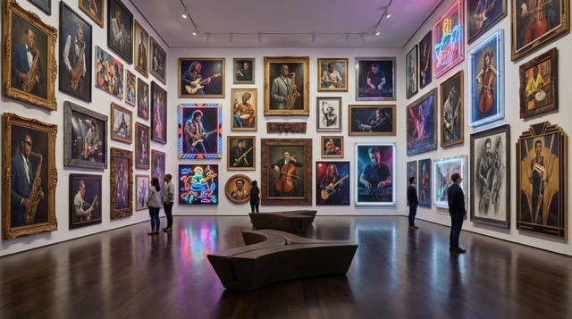
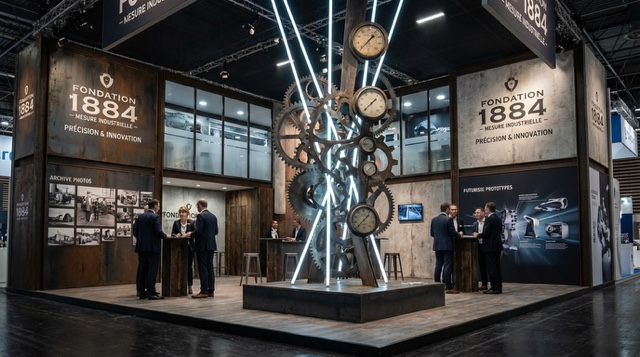
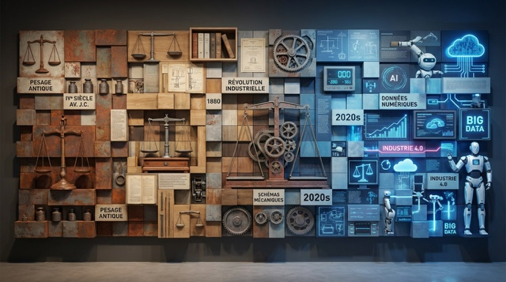
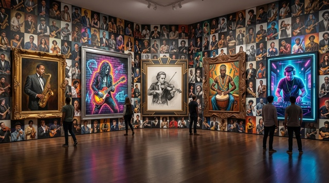

Salle 01 — Narration
01La frise vivante
De l’ère du jazz à la révolution rock’n’roll jusqu’à l’ère numérique : une histoire racontée le long d’un fil de lumière.

L’histoire, le patrimoine et les savoir-faire mis en scène dans des parcours immersifs.
Archives, objets, images, vidéos et ambiances sonores, accessibles en continu.
Visiter les salles →NEOKROME développe des musées virtuels immersifs permettant de valoriser ce qui vous rend unique.
Les contenus — archives, objets, images, vidéos ou ambiances sonores — sont mis en scène dans des parcours interactifs accessibles en continu.
De la frise chronologique au stand de marque, chaque espace est pensé comme une scène.

De l’ère du jazz à la révolution rock’n’roll jusqu’à l’ère numérique : une histoire racontée le long d’un fil de lumière.

Archives photo, prototypes et pièces emblématiques : l’histoire d’une marque, de ses origines à ses innovations.

Du pesage antique à l’industrie 4.0 : un métier raconté en une seule fresque, entre mémoire et projection.

Du cadre doré au néon, des œuvres mises en scène pour être découvertes de près, à son rythme.
Une collection ouverte en continu, à parcourir depuis n’importe quel navigateur.
Transmettre.Raconter.Faire découvrir.
Ces espaces offrent une nouvelle manière de transmettre, de raconter et de faire découvrir des univers, en combinant narration, immersion et technologie, au service de la mémoire et de la projection.
Marque, entreprise, institution… Parlez-nous de votre histoire : nous concevons le musée 3D qui la fera vivre, en continu, partout dans le monde.
contact@artexposium.fr →